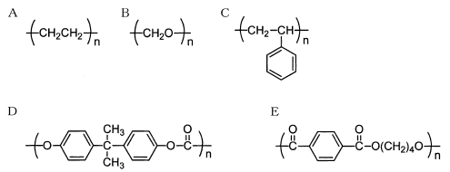

令和3年度 問19 高分子化学
次に示す化学構造を持つ高分子を汎用プラスチックとエンジニアリングプラスチック（エンプラ）に分類したとき、最も適切なものはどれか。ただし、Aの分子量は2万～20万とする。

| 選択肢 | 汎用プラスチック | エンプラ | |
|---|---|---|---|
|
①
|
A、B | C、D、E | |
|
②
|
A、B、C | D、E | |
|
③
|
A、C | B、D、E | |
|
④
|
A、B、E | C、D | |
|
⑤
|
B、C、E | A、D | |
正答
③ 汎用プラスチック：A、C、エンプラ：B、D、E
汎用プラスチックは安価で大量生産に向いたプラスチックです。更に機械的強度を向上させたものがエンジニアリングプラスチック（エンプラ）です。エンプラの中でも耐熱性等を向上させたものはスーパーエンジニアリングプラスチックと呼ばれます。
A～Eに関する名称や性質を以下にまとめました。
| 番号 | 名称 | 略号 | 汎用/エンプラ | 特徴 |
|---|---|---|---|---|
| A | ポリエチレン | PE | 汎用 | 軽量、耐薬品性、電気絶縁性、防湿性に優れる。安価で成形しやすい |
| B | ポリアセタール | POM | エンプラ | 規則正しい構造が作りやすいことから結晶化度が高いため強度・剛性等の機械特性に優れる |
| C | ポリスチレン | PS | 汎用 | 安価・発泡性・成形性があり汎用材料として用いられます |
| D | ポリカーボネート | PC | エンプラ | 透明性が高く、耐衝撃性に優れる。電気絶縁性、耐熱性も良好 |
| E | ポリエチレンテレフタレート | PET | エンプラ | 高い強度と剛性、優れた耐熱性、耐薬品性、ガスバリア性に優れる |